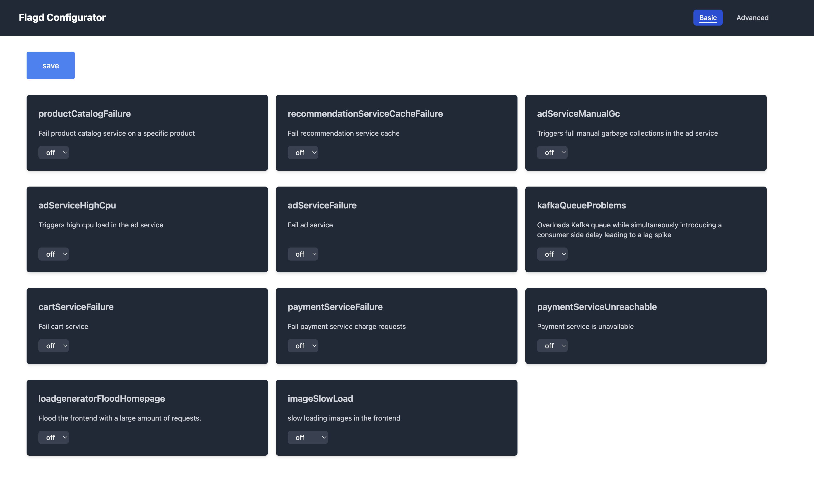

Workshop content#
What's running after post-create#
| Component | Where | Bootstrapped by |
|---|---|---|
| k3d cluster | dev container | framework startK3dCluster |
| Astroshop | astroshop namespace |
deployApp astroshop |
| GitLab | gitlab namespace, ingress at gitlab.<ip>.sslip.io |
installGitlab |
| 19 service repos + 3 support repos | inside GitLab | seedGitlabRepos |
| Locust loadgen | astroshop-load namespace |
deployLoadgenerator (post-start) |
| dtctl CLI | ~/.local/bin/dtctl |
installDtctl |
| Dashboards / SLOs / Workflows | tenant | applyDtctlConfigs (manual) |
printGreeting shows the URLs for each.
Accessing the Astroshop#
Run printGreeting in the terminal — it lists the public URL on
sslip.io. In Codespaces it's https://<codespace>-80.app.github.dev/.
Flipping the release / problem variant#
The four release variants live on dedicated branches in the seeded
GitLab repos (main, usecase/cpu, usecase/memory, usecase/n+1,
usecase/error).
Manual flip from the dev container#
# Send the deployment event + SDLC pipeline event to Dynatrace
sendDeploymentEvent 1.12.1 staging cpu
Manual flip via the Astroshop UI#
The Astroshop also exposes its own feature-flag UI — open the URL from
the greeting and append /feature. In Codespaces this is something like
https://<codespace>-80.app.github.dev/feature.

Hourly auto-flip via the GitLab pipeline#
The seeded Support/Astroshop_Release repo (gitlab-ci.yml) walks the
four releases on a schedule, emitting Workflow runs and CUSTOM_DEPLOYMENT
events at each stage — perfect for the unattended "let it run while we
talk" demo.
Stop bad builds — the integrated demo#
This is the meat of the workshop. See Stop bad builds for the full narrative; the short version:
- Pipeline deploys
1.12.0to staging → CUSTOM_DEPLOYMENT event fires. - Locust hammers the shop while OneAgent records traces + Golden Signals.
- SRG validates the SLOs over the load-test window → PASS.
- Pipeline promotes to production.
- Repeat with
1.12.1/cpu — SRG returns FAIL → pipeline halts before thepromote-productionjob. TheRollback astroshopworkflow can be dispatched from the Dynatrace Workflow via the GitHub Connector.
CI/CD Observability — the Dynatrace app#
This repo is wired to feed the community CI/CD Observability app. The app is "available upon request" — your Dynatrace contact activates it on your tenant, then the data path is:
GitHub Action / bash helper
│ (POST)
▼
/platform/ingest/custom/events.sdlc/<provider> ← OpenPipeline rules
│ in the app translate
▼ these to SDLC events
Grail (events table, kind=SDLC_EVENT)
│
▼
CI/CD Observability app dashboards / flamegraph
The bash helper seedCicdPipelineData (see
.devcontainer/util/my_functions.sh) generates a four-release demo run
with all task events shaped exactly per the
app's documented schema.
export DT_TENANT_URL=https://<tenant>.live.dynatrace.com
export DT_API_TOKEN=<token with openpipeline.events.ingest>
seedCicdPipelineData
Resources cap & cleanup#
The four broken-release pipelines deliberately stress the cluster. If a codespace runs out of file descriptors: